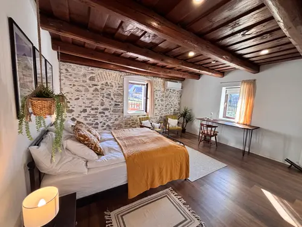

#110Huzd a kepet a sorrend modositasahozdandelion-vintage-source-006.webpvintage-006
betöltés…ismeretlen
SEO draft
approved: false
altHu: Hálószoba fa gerendás mennyezettel és kőfalakkal
titleHu: Vintage hálószoba fa mennyezettel
captionHu: A hálószoba kényelmes ággyal és ülősarokkal készült.
altEn: Bedroom with wooden beams and stone walls
titleEn: Vintage bedroom with wooden ceiling
captionEn: The bedroom has a comfortable bed and a seating area.